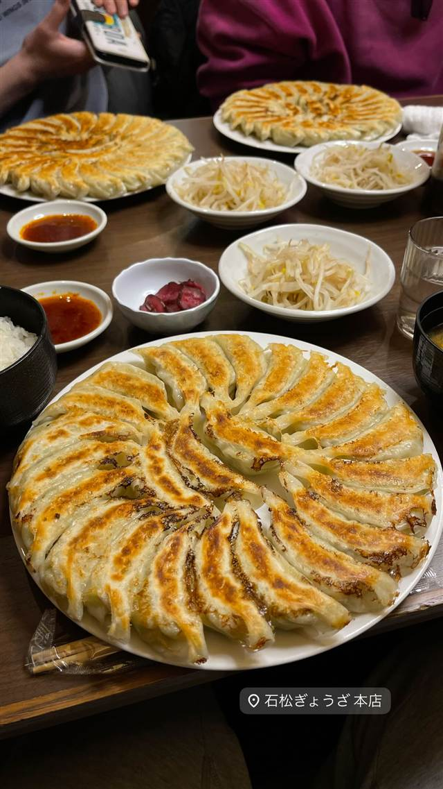

町中華 · 餃子専門 · 浜北
石松餃子 本店
屋台発祥、もやし添えと丸並べ焼きを生んだ元祖浜松餃子
石松ぎょうざ 本店
昭和28年、浜松駅前の屋台から始まった「元祖浜松餃子」の店。フライパンに餃子を丸く並べて一度に多く焼く手法や、もやしを添えるスタイルは初代店主が考案したもので、今では浜松餃子の定番になっている。
TRIVIA
豆知識
- 浜松餃子の定番「もやし添え」は石松餃子が発祥
- 餃子を丸く並べて焼く方法は初代店主が試行錯誤の末に生み出した
REVIEWS
世間の評判
3.45食べログ
あっさり野菜たっぷりの浜松餃子
- あっさりした味わいで野菜の甘みがよく感じられるという声が多い
- 皮がもちっとした食感で50個以上を平らげる人もいるという声がある
- 2時間待ちになることもあるほど長い行列ができるという声もある
- 待合所が暑く虫が多いなど環境面に不満を感じた人もいるという声もある
食べログ 口コミ514件
| 創業 | 昭和28年（1953年）創業 |
|---|---|
| 系譜 | 浜松駅前の屋台から始まった「元祖浜松餃子」の店。 |
| 看板 | 元祖浜松餃子（一口餃子） |
| こだわり | フライパンに餃子を丸く並べて一度にたくさん焼く独自の焼き方を考案。浜松餃子の定番である「もやし添え」も同店が発祥。 |
| 掲載・評価 | JR浜松駅店が2021年「餃子 百名店」（食べログ）に選出。 |
| どこから | 遠方 |
| 行くなら | 行列 |
| 営業時間 | 月〜金 11:00-14:30、17:00-20:30 土・日 11:00-21:30 |
| 予算 | 昼 ¥1,000～¥1,999 夜 ¥1,000～¥1,999 |
| 予約 | 予約不可 |
| 場所 | 静岡県浜松市浜名区平口252-1 |
| メモ | 行列が絶えない人気店。テイクアウト可。現在浜松エリアに5店舗を展開。 |
食べたもの：餃子
NEARBY
近い店・同じ系統の店
-
 餃子専門 亀戸駅
亀戸餃子 本店
座ると自動で2皿確定、1955年創業の下町餃子専門店
昼 ～¥999 夜 ～¥999
餃子専門 亀戸駅
亀戸餃子 本店
座ると自動で2皿確定、1955年創業の下町餃子専門店
昼 ～¥999 夜 ～¥999
-
 餃子専門 幡ヶ谷
您好（ニイハオ）
ひき肉でなく粗く刻んだ肉を使う、連続ビブグルマンの餃子
昼 ¥2,000～¥2,999 夜 ¥2,000～¥2,999
餃子専門 幡ヶ谷
您好（ニイハオ）
ひき肉でなく粗く刻んだ肉を使う、連続ビブグルマンの餃子
昼 ¥2,000～¥2,999 夜 ¥2,000～¥2,999
-
 餃子専門 乃木坂
赤坂珉珉（みんみん）
酢コショウで食べる元祖、渋谷の名店直系ののれん分け店
夜 ¥4,000～¥4,999
餃子専門 乃木坂
赤坂珉珉（みんみん）
酢コショウで食べる元祖、渋谷の名店直系ののれん分け店
夜 ¥4,000～¥4,999
-
 餃子専門 銀座一丁目
銀座天龍 本店
ニンニクを使わず白菜と豚肉だけで作る12cmの大判餃子を創業以来守る
昼 ¥1,000～¥1,999 夜 ¥3,000～¥3,999
餃子専門 銀座一丁目
銀座天龍 本店
ニンニクを使わず白菜と豚肉だけで作る12cmの大判餃子を創業以来守る
昼 ¥1,000～¥1,999 夜 ¥3,000～¥3,999
-
 餃子専門 飯田橋駅
餃子の店 おけ以
東京に焼き餃子を広めた老舗、羽根つき餃子は1日1300個
昼 ¥1,000～¥1,999 夜 ¥1,000～¥1,999
餃子専門 飯田橋駅
餃子の店 おけ以
東京に焼き餃子を広めた老舗、羽根つき餃子は1日1300個
昼 ¥1,000～¥1,999 夜 ¥1,000～¥1,999
-
 餃子専門 恵比寿駅
えびすの安兵衛
高知の屋台仕込み、にんにくの効いたジューシーな餃子
夜 ¥1,000～¥1,999
餃子専門 恵比寿駅
えびすの安兵衛
高知の屋台仕込み、にんにくの効いたジューシーな餃子
夜 ¥1,000～¥1,999